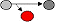
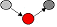
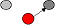

네트워크관리사-1급 (2008-09-28 기출문제)
1과목: TCP/IP
1. 전송 대역폭이 큰 순서대로 광섬유 종류를 나열한 것은?
- 스텝 인덱스 멀티모드>그레이드 인덱스 멀티모드>싱글모드
- 싱글모드>스텝 인덱스 멀티모드>그레이드 인덱스 멀티모드
- 싱글모드>그레이드 인덱스 멀티모드>스텝 인덱스 멀티모드
- 그레이드 인덱스 멀티모드>싱글모드>스텝 인덱스 멀티모드
(정답률: 알수없음)

2. 약어에 대한 풀이 중 잘못된 것은?
- CMIP - Common Management Internet Protocol
- SNMP - Simple Network Management Protocol
- IMAP - Internet Message Access Protocol
- IGMP - Internet Group Management Protocol
(정답률: 알수없음)
3. 일반적으로 icqa@icqa.or.kr 이라는 전자우편 주소를 가진 사람이 웹 브라우저를 이용하여 자신의 홈 디렉터리에 파일을 업로드하려고 할 때, 적절한 URL은?
- http://icqa@icqa.or.kr
- http://icqa.or.kr/~icqa
- ftp://icqa@icqa.or.kr
- ftp://icqa.or.kr/~icqa
(정답률: 알수없음)
4. B Class에 대한 설명 중 옳지 않은 것은?
- Network ID는 128.0 ~ 191.255 이고, Host ID는 0.1 ~ 255.254 가 된다.
- IP Address가 150.32.25.3인 경우, Network ID는 150.32 Host ID는 25.3 이 된다.
- Multicast 등과 같이 특수한 기능이나 실험을 위해 사용된다.
- Host ID가 255.255일 때는 메시지가 네트워크 전체로 브로드 캐스트 된다.
(정답률: 알수없음)
5. 인터넷의 기초 프로토콜인 TCP/IP를 통해 오가는 내용을 모두 캡처하는 커맨드 라인 기반의 프로그램은?
- Assemble
- TCPDump
- Telnet
- SSH
(정답률: 알수없음)
6. IP Address와 라우터에 대한 설명으로 옳지 않은 것은?
- IP Address는 Network ID와 Host ID로 구성된다.
- 라우터는 라우팅 알고리즘을 이용하여 최적의 경로를 산출한다.
- 라우터는 Network ID에 근거하여 IP 데이터 그램을 라우팅 한다.
- 라우터는 망의 위치 정보뿐만 아니라 인터넷상의 모든 컴퓨터의 위치 정보를 알고 있다.
(정답률: 73%)
7. IPv6를 IPv4와 비교할 때 기대효과라 할 수 없는 것은?
- IPv4와 비해 더 많은 호스트를 사용할 수 있다.
- 옵션을 이용하여 효율적이고 다양한 서비스가 가능하며 보안 기능이 추가되었다.
- 라우터의 부담을 줄이고 네트워크 부하를 분산시킬 수 있다.
- 더 넓은 지역으로의 브로드 캐스트가 가능하다.
(정답률: 알수없음)
8. ARP와 RARP에 대한 설명으로 옳지 않은 것은?
- RARP는 로컬 디스크가 없는 네트워크상에 연결된 시스템에도 사용된다.
- ARP는 IP 데이터 그램을 정확한 목적지 호스트로 보내기 위해 IP에 의해 보조적으로 사용되는 프로토콜이다.
- RARP는 IP Address를 알고 있는 상태에서 그 IP Address에 대한 MAC Address를 알아낼 때 사용한다.
- ARP와 RARP의 패킷 구조는 매우 비슷하다.
(정답률: 알수없음)
9. IGMP 쿼리 메시지는 ( A )에서 ( B )로 보내지는 메시지이다. 올바른 것은?
- A-호스트, B-호스트
- A-호스트, B-라우터
- A-라우터, B-호스트
- A-라우터, B-라우터
(정답률: 알수없음)
10. TCP/IP 망을 기반으로 하는 다양한 호스트 간 네트워크 상태 정보를 전달하여 네트워크를 관리하는 표준 프로토콜은?
- FTP
- ICMP
- SNMP
- SMTP
(정답률: 알수없음)
11. IP 헤더 필드 중 단편화 금지(Don't Fragment)를 포함하고 있는 필드는?
- TTL
- Source IP Address
- Identification
- Flags
(정답률: 알수없음)
12. SMTP에 대한 설명으로 옳지 않은 것은?
- 클라이언트는 512 이상인 임의의 포트를 사용하고, 서버의 IP 포트 25에 연결한다. 연결을 받아들이면 서버는 250 Ready 메시지로 응답한다.
- 클라이언트는 SMTP 세션이 HELO(Hello) 명령을 보내 세션이 설립되도록 요구한다.
- 클라이언트는 SMTP 서버에게 누가 메시지를 보내고 있는지를 MAIL FROM : Address 명령으로 알린다.
- 클라이언트는 현재 RCPT TO : Address 명령을 사용하여 메시지가 가려고 하는 모든 수신자들을 알린다.
(정답률: 알수없음)
13. Gopher에서 연결되는 서비스에 대한 설명으로 옳지 않은 것은?
- Gopher를 이용하여 FTP 사이트에서 Binary 파일을 수신할 때에는 사용자의 유닉스 쉘 홈 디렉터리로 다운로드 된다.
- Gopher에서 News Group 서비스도 메뉴 방식으로 제공된다.
- 유닉스 쉘에서 Gopher를 통하여 WWW을 이용할 때에는 텍스트 형태로 제공된다.
- Telnet, Archie, WAIS 등의 서비스도 이용이 가능하다.
(정답률: 알수없음)
14. 외부 게이트 프로토콜(EGP)에서 사용되는 기능으로 옳지 않은 것은?
- 도달가능 여부에 대한 정보를 공유하기 원하는 라우터들을 정의한다.
- 동일한 자율적 시스템내의 라우터들 간에 라우팅 정보를 교환한다.
- 이웃하는 라우터들은 현재 사용 중인 것을 확인하기 위해 송신되어 진다.
- 도달가능 여부에 대한 정보를 포함하는 갱신 메시지들을 보낸다.
(정답률: 알수없음)
15. IPv6 중 그룹 내에 가장 가까운 인터페이스를 가진 호스트 사이의 통신이 가능한 형태는?
- Unicast Type
- Anycast Type
- Multicast Type
- Broadcast Type
(정답률: 알수없음)
16. Bluetooth 기술에 대한 설명으로 올바른 것은?
- 주파수 호핑 속도가 빠른 DSSS(Direct Sequence Spread Spectrum)을 사용하여 간섭에 강하다는 점이다.
- 1대의 Master가 7대까지의 Slave를 연결하는 피코넷(Piconet)으로 구성되어 있다.
- 주요 통신방식은 FDD(Frequency Division Duplex) 방식을 사용한다.
- 부품의 전력 소모량이 크고, 그 부피도 큰 편이므로 소형 모바일 기기에 내장시키기에는 적합하지 않다.
(정답률: 알수없음)
2과목: 네트워크 일반
17. SNMP에 대한 설명으로 옳지 않은 것은?
- 사용자가 네트워크 문제점을 발견하기 전에 시스템 관리 프로그램이 문제점을 발견할 수 있다.
- 데이터 전송은 UDP를 사용한다.
- IP에서의 오류 제어를 위하여 사용되며, 시작지 호스트의 라우팅 실패를 보고한다.
- 네트워크의 장비로부터 데이터를 수집하여 네트워크의 관리를 지원하고 성능을 향상시킨다.
(정답률: 알수없음)
18. P2P 반대 개념인 Server Centric 설명으로 올바른 것은?
- 하나의 실체가 동시에 네트워크 서비스의 제공자와 요구자가 될 수 있는 시스템을 의미한다.
- 네트워크 서비스의 제공자와 요구자에 대한 역할이 엄격하게 규정되고 있다.
- 어떤 실체가 서비스를 하고 어떤 컴퓨터가 요구자가 될 것인지에 대해 제한을 두지 않는 것을 의미한다.
- 네트워크 소프트웨어는 동일 운영체제 또는 동일 통신계층에서 사용되는 개념이다.
(정답률: 알수없음)
19. Token Ring 기법을 발전시킨 것으로 “이중 링” 구조를 가지는 것은?
- Token Bus
- FDDI
- Gigabit Ethernet
- ATM
(정답률: 알수없음)
20. 데이터나 신호를 전송 가능한 신호로 변환시키는 것은?
- 인코딩
- 디코딩
- 표본화
- 압신기
(정답률: 알수없음)
21. ARQ 중 에러가 발생한 블록 이후의 모든 블록을 재전송하는 방식은?
- Go-Back-N ARQ
- Stop-and-Wait ARQ
- Selective ARQ
- Adaptive ARQ
(정답률: 알수없음)
22. 다중화(Multiplexing)의 장점으로 옳지 않은 것은?
- 전송 효율 극대화
- 전송설비 투자비용 절감
- 통신 회선설비의 단순화
- 신호처리의 단순화
(정답률: 알수없음)
23. ITU-TS에서 권고한 ISDN 가입자의 기본 채널 구조인 2B+D 접속에서 전송 정보량은?
- 80Kb/s
- 128Kb/s
- 144Kb/s
- 256Kb/s
(정답률: 알수없음)
24. FDDI의 장점은?
- 가격이 저렴하다.
- 보안성이 좋다.
- 주로 Token Bus를 사용한다.
- 대역폭이 좁다.
(정답률: 알수없음)
25. Bandwidth 용량에 거의 제한을 받지 않는 Cell-Based 기술을 이용하는 방식은?
- CDDI
- 100BASE-T
- ATM
- Gigabit Ethernet
(정답률: 알수없음)
26. H.323에 기초한 VoIP 모델을 구성하기 위해 터미널의 등록과 인증 대역폭 관리를 담당하는 요소는?
- Terminal
- Gatekeeper
- Gateway
- Multiplxer
(정답률: 알수없음)
27. 광섬유의 특징으로 옳지 않은 것은?
- 광섬유 표면에 상처가 있을 때 파단고장이 발생할 수 있다.
- 광부품의 제조에 미세 가공이 요구되며 접속이 어렵다.
- 광중계기의 전원 공급은 코어를 이용함으로 편리하다.
- 손실 및 분산 현상이 생길 수 있다.
(정답률: 알수없음)
3과목: NOS
28. Windows 2000 Server의 공유 폴더에 대한 설명으로 옳지 않은 것은?
- 공유 폴더의 권한은 각각의 파일이 아니라 공유 폴더 전체에만 적용 될 수 있다.
- 공유 폴더란 시스템 사용자가 네트워크의 다른 사용자가 접근 할 수 있도록 권한을 부여한 폴더를 의미한다.
- 기본 공유 폴더의 권한은 “모든 권한”이며, 폴더를 공유할 때 “Users” 그룹에 할당 된다.
- Admin$는 기본적으로 공유되어 있는 폴더로 운영체제의 기본 폴더이며 관리자 그룹만 접근 할 수 있다.
(정답률: 알수없음)
29. Windows 2000 Server에서 “icqa.or.kr”과 “test.icqa.or.kr”을 하나의 Server에서 서비스를 하기 위한 설정 과정으로 옳지 않은 것은?
- “icqa.or.kr”과 “test.icqa.or.kr”을 DNS에 설정 후, 기존서버 NIC에 새로운 NIC을 추가하고, 각각 해당 도메인명의 IP를 설정한 후, IIS에서 설정한다.
- “icqa.or.kr”과 “test.icqa.or.kr”을 DNS에 설정 후, 서버 한 개의 NIC에 각각의 IP를 등록한 후, IIS에서 설정한다.
- “test.icqa.or.kr”은 DNS에서 A레코드를 추가한 후, 해당 IP Address가 설정된 서버의 IIS에서 설정한다.
- DNS 서버에서 단일 IP Address를 설정한 후, 해당 IIS 서버의 호스트 헤더를 각각 등록한다.
(정답률: 알수없음)
30. 하나의 시스템에서 FTP 서버와 웹서버를 운영할 경우, [관리도구] - [DNS]에서 해당 도메인의 팝업 메뉴 중 어떤 것을 선택하는가?
- 새 호스트(S)
- 새 별칭(A)
- 새 위임(G)
- 다른 새 레코드(C)
(정답률: 알수없음)
31. Anonymous로 접속되는 것을 허락하지 않을 경우, 관리자는 FTP 사이트의 등록정보 대화상자에서 어떤 탭에서 설정해야 하는가?
- 메시지
- FTP 사이트
- 디렉터리 보안
- 보안 계정
(정답률: 알수없음)
32. Windows 네트워크의 NetBIOS 이름에 대한 IP Address를 제공하는 일종의 데이터베이스로서, 클라이언트가 NetBIOS 이름으로 서비스를 요청할 경우에 해당하는 IP를 응답해 주는 기능을 가진 서버는?
- DNS
- DHCP
- WINS
- FTP
(정답률: 30%)
33. Windows 2000 Server에서 Active Directory 서비스를 실행하기 위해 사용되는 표준은?
- DIP
- IPX
- LDAP
- DHCP
(정답률: 알수없음)
34. Linux 시스템의 기본 디렉터리에 대한 설명으로 옳지 않은 것은?
- /etc : 시스템 설정과 관련된 파일이 저장된다.
- /dev : 시스템의 각종 디바이스에 대한 드라이버들이 저장된다.
- /var : 시스템에 대한 로그와 큐가 쌓인다.
- /usr : 각 유저의 홈 디렉터리가 위치한다.
(정답률: 알수없음)
35. Linux 상에서 Ethernet Card를 설치하고 네트워크 설정을 하려고 할 때 연관성이 적은 명령어는?
- lsmod
- ifconfig
- route
- top
(정답률: 알수없음)
36. 사용자 계정을 추가하려고 할 때 만들 수 없는 것은?
- useradd ICQA
- useradd icqa12
- useradd icqa34net
- useradd 21network
(정답률: 알수없음)
37. Linux의 기본 명령어와 MS-DOS에서 동일한 기능을 갖는 명령어로 잘못 연결된 것은?
- ls - dir
- cp - copy
- mkdir - md
- cat - ren
(정답률: 알수없음)
38. 네트워크의 트래픽이 지속적으로 증가하는 경우에 대한 처리 방법으로 옳지 않은 것은?
- 바이러스를 확인하여 본다.
- 네트워크 모니터를 사용해 비정상적인 트래픽의 원인을 분석한다.
- 네트워크를 여러 개로 분리한다.
- 케이블의 연결 상태를 확인하여 본다.
(정답률: 알수없음)
39. 바이너리 설치시 아파치(Apache) 관련 디렉터리와 파일 위치가 올바른 것은?
- 아파치 환경설정 파일(httpd.conf)이 있는 디렉터리는 /etc/conf 이다.
- 웹 서버 루트 디렉터리는 /etc/httpd 이다.
- 웹 문서 및 파일이 있는 디렉터리는 /var/html 이다.
- 웹 데몬 실행 파일인 httpd가 위치하는 디렉터리는 /var/sbin 이다.
(정답률: 알수없음)
40. Linux에서 Windows나 다른 Linux Samba Server에 접속하기 위해 사용되는 프로그램은?
- smbclient
- swat
- smbmount
- ws-ftp
(정답률: 알수없음)
41. Linux 시스템의 Sendmail 관련 설정 파일에 관한 설명으로 옳지 않은 것은?
- sendmail.cf : sendmail 주 설정 파일
- local-host-names : 가상 메일 서비스를 위한 가상 도메인 이름 지정
- access : sendmail 서버로 접근제한
- aliases : 사용자에 대한 alias 작성
(정답률: 알수없음)
42. Linux에서 Windows의 NDD(Norton Disk Doctor)나 ScanDisk와 같은 역할을 하는 프로그램은?
- fsck
- fdisk
- debugfs
- xxd
(정답률: 알수없음)
43. Windows 프로그램을 자동으로 설치하는 Setup과 유사한 기능을 가지는 Linux의 설치 툴은?
- Installer
- RPM
- TAR
- GCC
(정답률: 알수없음)
44. 보안 템플릿 설정을 가져올 데이터베이스(test.sdb)를 지정하며 설정된 데이터베이스로 가져올 보안 템플릿(test.inf)을 지정 하고, 이때 데이터베이스에 보안템플릿에 관한 설정이 누적되지 않도록 데이터베이스를 비우는 secedit 구문으로 올바른 것은?
- secedit /import /db test.sdb /cfg test.inf /overwrite
- secedit /analyze /db test.sdb /cfg test.inf /quiet
- secedit /import /db test.sdb /cfg test.inf /quiet
- secedit /analyze /db test.sdb /cfg test.inf /overwrite
(정답률: 알수없음)
45. Windows 2000 Server에 Application 설치를 자동화할 때 응답파일을 수정하여 이용하고자 한다. 응답파일의 어느 구역을 수정하여야 하는가?
- Unattended
- GuiRunOnce
- UserData
- Display
(정답률: 알수없음)
4과목: 네트워크 운용기기
46. RAID에 대한 설명이 올바른 것은?
- RAID는 여러 개의 디스크로 구성된 디스크 배열을 의미한다.
- RAID는 레벨 0 ~ 4 까지 모두 5개의 규약이 있다.
- 레벨 ‘0’은 미러 모드라고 하는데 하나의 데이터를 여러 드라이브에 나누어 저장하는 기술이다.
- 레벨의 의미는 데이터 입출력 속도가 빨라지는 단계에 따라 구분한다.
(정답률: 알수없음)
47. Switch Hub의 패킷 전송 방식에 대한 설명 중 옳지 않은 것은?
- Cut-Through : 프레임의 모든 데이터를 저장하지 않고 헤더의 목적지 주소만을 검색해서 프레임을 목적지 포트로 전송
- Store and Forward : 스위치에 들어오는 모든 프레임을 복사해서 저장한 다음 MAC 주소를 보고 목적지 포트로 전송
- Fragment-Free : Cut-Through와 Store and Forward를 혼합한 방식
- Stacking : 특정 포트에서 유입되는 데이터를 선입후출 방식으로 목적지 포트로 전송
(정답률: 알수없음)
48. 두 개 이상의 동일한 LAN 사이를 연결하여 네트워크 범위를 확장하고, 스테이션 간의 거리를 확장해 주는 네트워크 장치는?
- Repeater
- Bridge
- Router
- Gateway
(정답률: 알수없음)
49. 주로 단독주택의 초고속 인터넷에 사용되는 기술로 기존에 설치된 Cable TV 회선을 이용하여 인터넷을 이용할 수 있는 기술은?
- Ethernet
- VDSL
- ADSL
- HFC
(정답률: 알수없음)
50. RS-232 통신의 설명으로 옳지 않은 것은?
- 일반적으로 컴퓨터에서 COM 포트라고 한다.
- 경제적이며 원거리 통신에 적합하다.
- 전송 속도가 늦다.
- 컴퓨터와 주변기기 사이의 데이터 전송에 사용된다.
(정답률: 알수없음)
5과목: 정보보호개론
51. 정보 시스템의 발달로 인해 나타나는 역기능에 해당하지 않는 것은?
- 정보의 무단절취, 수정, 파괴
- 다양한 정보의 수집
- 정보통신망의 부정접속
- 바이러스의 확산
(정답률: 알수없음)
52. 시스템의 침투 형태 중 네트워크의 한 호스트에서 실행되어 다른 호스트들의 패킷 교환을 엿듣는 해킹 유형은?
- Sniffing
- IP Spoofing
- Domain Spoofing
- Repudiation
(정답률: 알수없음)
53. 아래 그림은 인터넷에서 “정상적인 데이터 전송”을 도식화한 것이다. 이것을 근거로 하여 침입 형태 중 조작(Fabrication)에 해당하는 것은? (정상적인 데이터 전송 : )



(정답률: 알수없음)
54. Windows 2000 Server의 계정 정책(Account Policies)에 해당되지 않는 것은?
- 균등한 디스크 할당
- 감사 정책
- 사용자 계정 특성 제어
- 사용자 권한 제어
(정답률: 알수없음)
55. Windows 2000 Server 시스템에서 로컬 사용자, 그룹 관련 정보를 저장한 데이터베이스는?
- SAM
- Active Directory
- SRM
- WinLogon
(정답률: 알수없음)
56. Apache 웹 서버 로그에서 확인 할 수 없는 정보는?
- 클라이언트의 IP Address
- 클라이언트의 요청 페이지
- 클라이언트의 접속 시도 날짜
- 클라이언트의 게시판 입력 내용
(정답률: 알수없음)
57. 암호 방식 중 블록 암호화 방법에 해당하는 것은?
- A5/1
- AES
- RC4
- SEAL
(정답률: 알수없음)
58. 여러 가지 암호화 방식(Cryptography)을 사용하여 메시지를 암호화함으로써 우리가 획득할 수 있는 보안요소로 옳지 않은 것은?
- Confidentiality
- Integrity
- Firewall
- Authentication
(정답률: 알수없음)
59. 이것은 EIT에서 제안한 HTTP의 보안 확장판으로 HTTP가 송수신하는 데이터의 암호화를 수행하여, 전자 서명을 지원하는 새로운 프로토콜이다. 기존의 Request와 Response 형식 구조를 그대로 유지하면서 추가적인 헤더 정보를 사용해서 클라이언트와 암호화 기법을 교섭하는 방식은?
- S-HTTP
- SSL
- STT
- SET
(정답률: 알수없음)
60. 프로그램의 저작물을 인정하여 프로그램 저작권자에게 부여하는 권리로 옳지 않은 것은?
- 공표권
- 성명 표시권
- 복제권
- 동일성 유지권
(정답률: 알수없음)